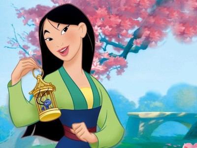
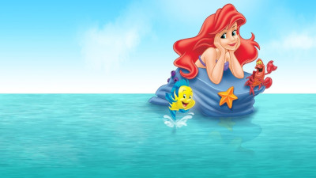
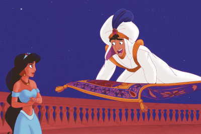

Melhores Desenhos da Disney
Mulan Blue
Sinopse: Para salvar seu pai da morte por um Exercito mongol , uma jovem e corajosa guerreira toma seu lugar secretamente e se torna uma das maiores heroínas da China..
Sinopse: Uma princesa sereia vive nas profundezas do mar que o pai governa. Ela está profundamente insatisfeita com sua vida, e deseja conhecer o mundo dos humanos para conhecer uma nova perspectiva. No entanto, toda vez que ela tenta sair de casa, seu pai a proíbe, pois, para ele, a garota não calcula as consequências daquilo que deseja.
Aladin
Sinopse: Quando um pobre morador de rua se encontra com uma princesa, o futuro dos dois se entrelaça. Um gênio é encontrado nos confins de uma caverna mística, causando uma grande mudança no rumo dos acontecimentos. Entretanto, há um poderoso inimigo que deseja o principado e ele fará de tudo, de magia a feitiçaria, para conquistar o poder.